用自由軟體 Plone 來架設網站 (1)— 基礎安裝

安裝 Plone 很簡單，下載安裝檔案後，很快就在 Windows 或 Linux 等環境完成架站，它的內建工具已能滿足常見的應用場合，像是 wiki 編輯環境，TinyMCE 編輯器等，加上會員管理及工作流程的支援後，搖身變為企業級的內容管理系統，這些都是它的應用彈性，協助內容管理人員輕鬆經營網站。
另一方面，Plone 也照顧程式開發人員的需求。它搭配一套開發框架，及一系列的擴充工具和測試工具，可以新增或開發各式模組，為系統增加其他功能特色，包括支援多媒體的表單，提昇視覺體驗的 AJAX 特效，結合 Google Map 或 Subversion 等常見的外部系統。本文將以 Plone 網站開發框架為主角，進行名詞解釋，並介紹 Python 專案開發工具的操作方式。
Plone 的開發框架
早期 Plone 只是一個內容管理系統 (Content Management System，CMS) 模組，後來才衍生出開發框架。它以 Python 和 Zope 為基礎，2011 年的此刻，不少 Plone 實作品還處於轉型的階段，網路上不容易找到完整而穩定的文件。本文的目的之一，就是試著說明 Plone 開發框架的最新狀況，包括版本、模組註冊方式、設定檔格式等。
開發框架通常扮演網站系統的中間層角色，它的底層是程式語言和作業系統環境，它的上層是應用程式，為了快速滿足應用程式的設計需求，開發框架必須提供一致的介面和邏輯思惟，讓開發人員藉以解決問題。
Zope 最早是一個 Application Server 系統，同時也是一個開發框架，目前版本分成 Zope2 和 Zope3 兩種體系，前者版本號碼以 Zope2-2.12.x 方式來命名，後者則以 zope.x 方式來命名。簡單地說，既有的 Plone 3.3.x 和 Plone 4.0.x 版本，混用了 Zope2 和 Zope3 的功能和技術，混用的目的，是為了維護應用軟體的相容性，不過，這也帶來版本相依性的議題。首先，我們要知道如何選用 Python 的版本。
Python 版本的選用方式
Plone 4.0 是個分界點，在此之前使用 Python 2.4 版本，之後使用 Python 2.6 版本，原因在於 Zope 的支援程度不同。例如 Plone 3.3.x 使用 Zope 2-2.10.x，必須搭配 Python 2.4；而從 Plone 4.0.x 開始，使用 Zope 2-2.12.x 以上的版本，底層也昇級為 Python 2.6。這個改變造成 Plone 4.x 執行效能大幅提昇，配合使用 plone.reload 工具的話，修改程式碼的過程就不需要重新啟動伺服器，可以再減少開發時間。額外的效益還包括記憶體的使用量減少了，以往 512MB RAM 的電腦跑不動 Plone 3.3.x，現在可以順利執行 Plone 4.0.x。
真是複雜，那該怎麼選呢？剛接觸的朋友，建議使用 Plone 4.0.x 和 Python 2.6.x 環境，並且直接下載安裝檔來起步。下列將以 Ubuntu Linux 示範指令，動手操作會更容易探索系統。
安裝檔快速起步
Plone 的安裝檔稱為 Unified Installer，以 4.0.2 的安裝檔為例：
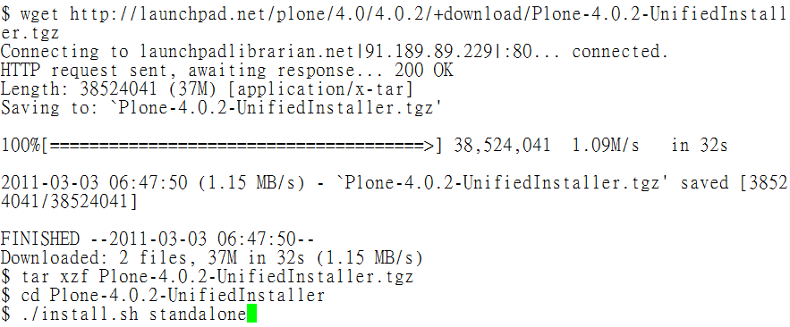
▲ 圖1 下載及編譯安裝
最後，畫面顯示 admin 帳號的密碼，它是首次安裝時的管理者帳號密碼，這組帳號密碼也會記錄在 adminPassword.txt 檔案裡。完成編譯後，會產生 Plone 目錄，內含四個目錄：
* Python-2.6
* zinstance
* buildout-cache
* Plone-docs
顧名思義 Python-2.6 就是 Python 系統目錄，即使你的 Linux 已經裝好 Python，安裝檔還是再送給你一份。這樣的好處之一，是擁有獨立的底層函式庫，特別適合測試開發的場合，搞亂系統的話，砍掉重練，重新安裝即可。
zinstance 是 zope instance 的縮寫，系統運作過程所產生的動態資料，都會記錄在這裡，它也是管理工作的起始目錄，存放著記錄系統配置的設定檔，在 bin 目錄裡，也存放許多系統工具程式。
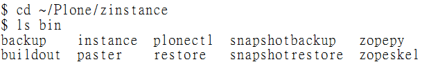
▲ 圖2 系統工具程式目錄
buildout-cache 目錄裡存放許多 egg 程式碼，egg 是 Python 建構各式應用軟體的元件單位，它的功能類似 Java 的 jar (Java ARchive)，或是 Ruby 的 gem。 以 Plone 為例，它是由上百個元件單位組成，並利用 Buildout 工具程式來管理元件的安裝與昇級，因此，認識 buildout 的運作機制，成為開發過程的重要工作。
系統配置設定檔
Buildout 程式執行時，預設需要搭配 buildout.cfg 設定檔，檔案裡記錄系統配置的資訊，首次啟動 Plone 前，可以查看想要修改哪些設定值，下列是部份設定範例：
http-address = 8080
... ...
user=admin:mypasswd
Plone 預設在 port 8080 啟動，想要更換 port 號碼的話，可以修改 http-address 的設定值。另外，想要更換 admin 管理者起始密碼的話，可以修改 user 的設定值。
每次修改 buildout.cfg 檔案後，都要執行 bin/buildout 讓設定值生效。成功生效之後，再執行 bin/plonectl 來啟動系統。啟動的參數分成 fg 和 start 兩種，分別代表前景執行和背景執行。
首次啟動系統的話，可以使用 bin/plonectl fg 指令，它會把系統執行訊息顯示在螢幕上，讓管理者即時觀察，這時候可以按 Ctrl + C 來停止系統執行。使用 bin/plonectl start 指令啟動的話，就可以用 bin/plonectl stop 指令來停止。
建立 Plone 網站
成功啟動後，在瀏覽器輸入 https://localhost:8080/ 之類的網址，會出現 Plone 的起始網頁。
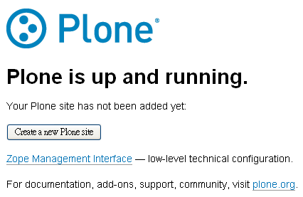
▲ 圖3 起始網頁
首次啟動的話，必須先新增 Plone 網站。填寫的資料當中，以網站識別碼最重要，它會成為網址的一部份。以 mysite 為例，它的網址格式會是 https://localhost:8080/mysite 這樣。
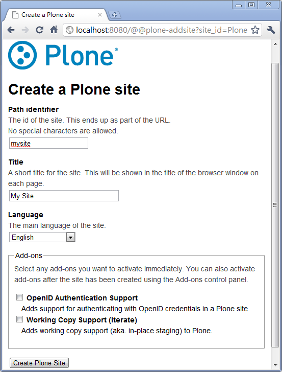
▲ 圖4 網站新增表單
使用管理者 admin 帳號密碼登入 Plone 網站後，先示範如何從管理前台新增會員帳號。
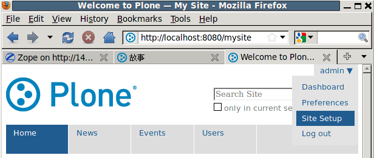
▲ 圖5 由 Site Setup 進入管理前台
首先，要設定帳號的安全政策，點選 Security 項目。
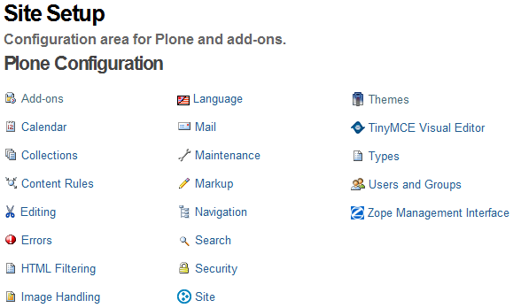
▲ 圖6 管理前台的清單項目
勾選 Let users select their own password，這樣在註冊帳號時，就可以自行選擇密碼。
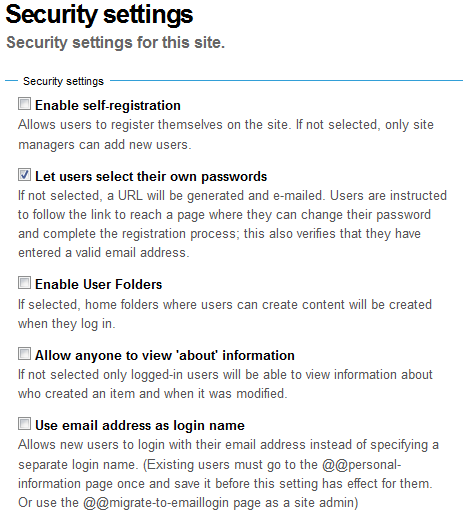
▲ 圖7 設定安全政策
再到 Users and Groups 新增一組帳號密碼。
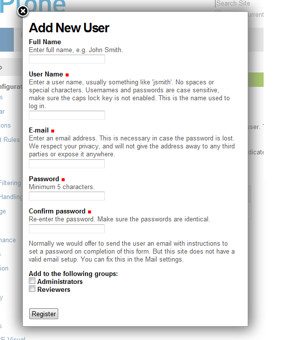
▲ 圖8 新增帳號
預設的會員帳號，屬於 Member 角色，當然，管理者可以在這裡指定其他角色，或是刪除這個帳號。
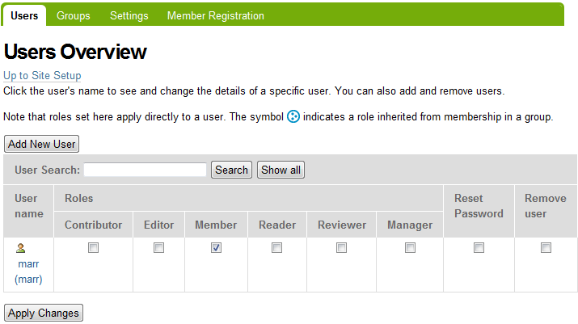
▲ 圖9 帳號管理
接著，我們開啟「另一種」瀏覽器，就可以同時觀察管理員、一般會員，登入系統時，畫面有哪些不同。因為帳號資訊是以 cookie 方式儲存，要用不同瀏覽器，才能讓帳號同時操作系統。
內容管理
Plone 預設提供的內容項目，包括：Page、News Item、Event、Image、File、Link、Folder、Collection 等，我們介紹 News Item 的新增方式。
先由管理員到 News 目錄，從 Sharing 指定一般會員帳號 Can add 的權限，這代表指定的帳號，可以在 News 目錄裡新增內容項目。
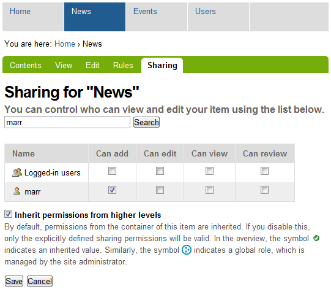
▲ 圖10 指定帳號權限
一般會員進入 News 目錄後，從 Add new... 可以點選 News Item 來新增。
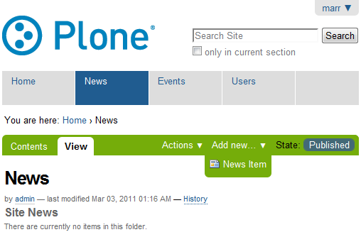
{kind=link}
▲ 圖11 新增內容項目
填寫 News Item 的各項欄位後，就可以將內容儲存。
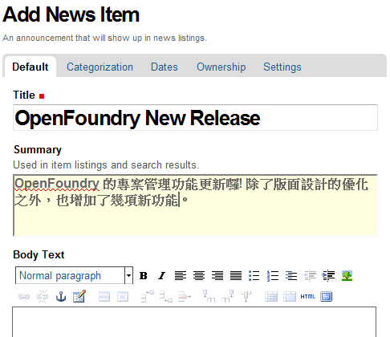
▲ 圖12 編輯內容項目
儲存的內容項目，預設是 Private 狀態，可以選擇 Submit for publication 提交給管理員，進行審核及發佈。
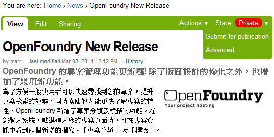
▲ 圖13 顯示內容項目
物件資料庫
一般的 LAMP 系統，常見使用 MySQL 來儲存內容，Plone 則是使用 ZODB 來儲存內容。網頁內容屬於半結構式資料，理論上並不適合完全套入資料庫的規範，使用物件資料庫顯得更直覺。當然，這不代表使用 SQL 儲存內容，不能提供優異的網站服務。重點在於，開發過程的思惟，它們有著根本的差異，經由 NoSQL 議題的廣受討論，相信更多人將逐步認識它們的差異。
那麼，哪裡找得到 Plone 存放的內容呢？在 Plone/zinstance/var/filestorage 目錄裡，找得到一個 Data.fs 檔案，它就是 ZODB 存取內容的實體檔案，系統運行過程，就會發現 Data.fs 增加大小。新版的 Plone 已經增加 BLOB 支援，在 Plone/zinstance/var/blobstorage 目錄裡，存放的是 Plone 系統裡的圖片、影音檔案，大幅改善以往 ZODB 容易過度膨脹的問題。
想要看到 Data.fs 裡的內容嗎？plonectl 工具程式提供一個 debug 參數，讓我們進入除錯模式來觀察 ZODB 內容。所有的物件以 app 為根目錄，使用 app.mysite 就能存取 Plone 網站，使用 app.mysite['news'] 代表存取 news 目錄。除錯模式的操作方法，對於 Python 朋友而言，並不陌生，更多的樂趣，先留給各位自行探索。
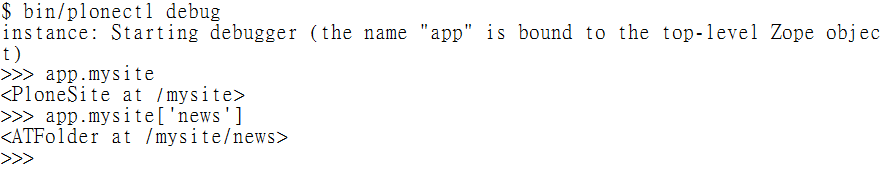
▲ 圖14 除錯模式
另外，透過 ZEO 可以支援多個客戶端存取，讓 ZODB 的延展度提昇，企業級的部署規劃，肯定需要這樣的功能。不過，初學者可能只關心，該怎樣備份 Plone 的 系統資料呢？最簡單的方式，只需要把 Data.fs 和 blobstorage 裡的檔案複製起來，就完成備份。
結論
網頁程式發展十餘年了，今日已有許多工作和生活應用，彈指之間就由網站服務完成，透過這樣的普及與內化過程，我們反而更不容易窺見它們的運作原理。內容管理系統是網頁應用程式的具體產品，它能完整示範一個通用式的網站，該具備哪些功能與特色。我把 Plone 當成樂高積木，藉由拆解和組合的過程，認識網站應用程式的奧秘。邀請想要探索奧秘的朋友，一起發掘 DIY 的樂趣。
您也許有興趣閱讀以下文章:
- 用自由軟體 Plone 來架設網站(10)－連接資料庫 - 2011-08-05
- 用自由軟體 Plone 來架設網站(9)－多媒體結合 - 2011-07-25
- 用自由軟體 Plone 來架設網站(8)－內容查詢 - 2011-07-12
- 用自由軟體 Plone 來架設網站(7)－版型調整 - 2011-06-28
- 用自由軟體 Plone 來架設網站 (6)－動態網頁 - 2011-06-09
- 用自由軟體 Plone 來架設網站 (5)－元件架構 - 2011-05-20
- 用自由軟體 Plone 來架設網站 (4)－建立專案 - 2011-05-04
- 用自由軟體 Plone 來架設網站 (3)— 內部設定 - 2011-04-25
- 用自由軟體 Plone 來架設網站 (2)— 內容管理 - 2011-04-11